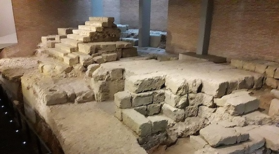

|
El Anfiteatro se descubrió en 2002 en la antigua Facultad de Veterinaria. Se ha
documentado una sección del graderío desde el podium, así como el
ambulacrum, corredor perimetral y un vomitorium, corredor
transversal. Fue el mayor anfiteatro de todo el imperio hasta la
construcción del coliseo de Roma. Con una capacidad de entre
30.000 y 50.000 espectadores. Actualmente es el tercer
anfiteatro más grande del mundo tras el Coliseo y el de Cartago.
En uso desde el siglo I-IV. |
Del Teatro sólo se conservan algunos
restos emergentes que se localizan en el Museo: restos escalonados de
traza semicircular, que son parte de las gradas reservadas a las
personalidades, y unas losas que constituyen el pavimento del lugar
reservado a la orquesta. Las investigaciones realizadas concluyen que el
teatro de Córdoba tuvo 125 m de diámetro externo, lo que lo convierte en
el mayor teatro conocido en la Hispania romana. El teatro se localiza en
la actualidad bajo el Museo Arqueológico y la Plaza de Jerónimo Páez a
unos cinco metros de profundidad bajo la Plaza.
Se construyó al sureste de la ciudad. Su edificación comenzaría en época
del emperador Augusto y culminada en época de Tiberio. Estuvo en
funcionamiento hasta finales del siglo III cuando fue dañado seriamente
por un terremoto.

|
|
Las inscripciones nos hablan del Circo, como la de
L. Iunius Paulinus cuando organizo unos juegos circenses a finales del siglo II
o principios del III. Tenemos datos que sitúan un circo en el huerto del Palacio
de Orive, próximo al templo de la c/ Claudio Marcelo, donde se hallaron los
restos de los muros de sustentación de las gradas. Su construcción se data a
mediados-finales del siglo I. Se abandona y sus muros son expoliados a finales
del siglo II.
Otra inscripción nos habla de los evergetas que a finales de siglo II o
principios del siglo III sufragaron unos juegos, cuando ya no existía el circo
oriental. La ciudad tenia dos circos. Se cree que el primero se abandono por
motivos estructurales y se aprovechó para edificar rápidamente el segundo; pero
lamentablemente se desconoce su localización. |
Ver
Circos romanos
Anfiteatros romanos
Teatros romanos
|